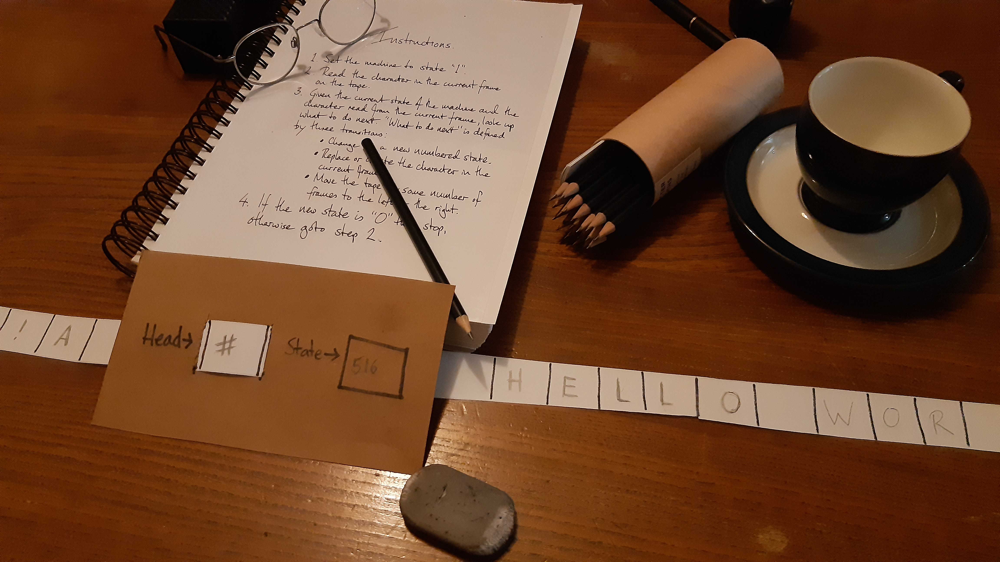

Automated Rule Following Machines
Why Computers Work (part 4)
What follows isn't so much a brain twist, as an extended make-pretend that points the way to what a computer is.
Imagine a strange looking contraption sitting before you on a table.
It consists of an exceptionally long reel-to-reel tape that passes through an electro-mechanical device of some sort. The tape is subdivided into square "frames". Some of the squares contain symbols, others are empty. As it operates, the tape moves through the device both to the left or to the right, like a badly behaved cinema projector.
The "head" (where the tape passes through the device) covers exacty one square's worth of the tape. There's a flash of light from the head when a new square is completely contained therein. Sometimes this is followed by a clicking sound. When the click is heard the symbol in the square is changed: it's either different or completely rubbed out. Then the tape moves to the left or right to a new square before continuing its strange flashing and clicking operation.
On the front of the machine is a little window. The window is labelled
"STATE" and contains a number that changes when each square is "processed" by
the head.
After a while the machine comes to a stop. The state window contains the number 0 (zero). By the head, on the tape, are a sequence of squares containing some familiar looking symbols:
H
|
E
|
L
|
L
|
O
|
|
W
|
O
|
R
|
L
|
D
|
Two other objects are on the table. On one side of the contraption is a black and white photograph of a thoughtful looking man with an old fashioned side parting and enigmatic smile, sitting in a sturdy deck chair. On the other is a thick ring-bound pile of paper whose title you can just make out: "Instructions".
The instructions listed on the front page consist of just four rules:
- Set the machine to state "1".
- Read the symbol in the current frame on the tape.
- Given the current state of the machine and the symbol read from the
current frame, look up what to do next. "What to do next" is defined by three
transitions:
- Change to a new numbered state.
- Replace or delete the symbol in the current frame.
- Move the tape by some number of frames to the left or the right.
- If the new state is "0" then stop, otherwise resume from rule 2.
On the many pages that follow is a single huge table entitled "What to do next". It contains thousands of entries under the same five columns, and all look something like these extracts:
| CURRENT STATE | HEAD READ | ➔ | NEXT STATE | HEAD WRITE | MOVE TAPE |
|---|---|---|---|---|---|
| 1 | "A" | 785 | "5" | 1L | |
| ... | |||||
| 516 | " " | 657 | "!" | 86R | |
| 516 | "#" | 657 | "!" | 86R | |
| ... | |||||
| 1023 | "#" | 1020 | " " | 23R |
A note, just above the table, explains:
Each combination of the "CURRENT STATE" and "HEAD READ" values is unique. There is one row for each possible combination. Identify the row that corresponds to the current state of affairs. The new state of affairs is defined by the "NEXT STATE", "HEAD WRITE" and "MOVE TAPE" values on the same row.
Therefore, the first line of the extract means that if the machine is in state 1 and the head reads the symbol "A" then the next state is 785, the symbol "5" should be written to the current square, and the tape should move 1 square to the left. The final line of the extract means that if the machine is in state 1023 and the head reads the symbol "#" then the next state is 1020, the symbol should be deleted from the current square and the tape should move 23 squares to the right.
This is propositional logic..!
It's a table of conditionals whose two premises (the "CURRENT STATE" and
"HEAD READ" values) are conjuncted (logical AND) to identify what the
resulting behaviour should be (the "NEXT STATE", "HEAD WRITE", and "MOVE TAPE"
values). IF the state is this AND the value read by the head is that
THEN go to the specified next state, write such-and-such to the tape and
move the tape by however many squares in a certain direction.
If you look carefully, hidden within the extract are also disjunctions (logical
OR). The middle two lines (for state 516) have the same state and outcome,
but different symbols read from the head. This is the same as checking IF
(the state is 516 AND the head reading is empty) OR (the state is 516
AND the head reading is "#") THEN the next state is 657, write "!" to
the tape and the tape should move 86 squares to the right.
But what is the purpose of this machine? What does it do?
It follows the four rules, that start the instruction manual, to repeatedly perform the logical steps defined in the "What to do next" table. The steps in the table react to and change the state of the symbols on the tape in order to arrive at a desired end result. What that end result is depends upon what's on the tape when the machine is switched on and how the steps in the table interact with that starting state and subsequent states of affairs.
In other words, given a certain "what to do next" table, a starting state and some input on the tape, it computes a result.
It is a computer!
If you had the instructions, a copy of the table, a physical tape, a pencil and an eraser you might follow the rules from the start state (state 1) until the end state (state 0) was achieved. But the machine would do it much faster and wouldn't get tired, bored or make mistakes.

This process might feel familiar: deliberately precise rules describe how,
given certain states of affairs, such and such things must happen. States of
affairs unambiguously describe how things are in the world. For example, "the
machine is in state 284 and the current square on the tape contains an H".
When I say that such and such must happen, I mean clear and unambiguous
instructions describe how the machine proceeds given a certain state of
affairs.
This is how I described the game of Snap in the first article!
It turns out that computing a result is not that different to playing a children's game. Computing a result is the same as following a set of instructions for changing states of affairs. Such unambiguous instructions are called algorithms.
Since the rules in the "what to do next" table are logical, they can be represented by the sorts of electrical circuitry described in the previous post. Such circuitry receives input signals from the components in the head, and controls other components such as the motors that control the tape.
For this machine to do anything meaningful, someone will have carefully crafted the "what to do next" rules so the symbols on the tape when the machine is switched on in state 1, are transformed into a completely-new-yet-useful set of symbols when the machine achieves state 0. The algorithm is defined by the "what to do next" rules written in the table and encoded in the circuitry. The machine transitions from state 1 and what may be found on the tape at that moment, via a huge number of intervening states, to state 0 and a computed result written on the tape.
What I've described is a Turing machine. Such an imaginary device was invented by the British mathematician Alan Turing (the chap in the photograph). It turns out that anything that can be computed by a set of instructions that manipulate symbols (the algorithm), can be computed by a Turing machine. Anything that works in a way that is equivalent to a Turing machine is described as Turing complete because it, too, is able to compute outcomes from an algorithm. To be Turing complete is to be a programmable computer.
Turing explained how computation works by describing his machine. If you create something that can work like a Turing machine then you have also created a computer. You don't have to prove your computer is complete, because Turing already did that for you. This equivalence of capability is why we learn about Turing machines: they make it clear what it is to be a computer.
There are many variations on a Turing machine. The one I've described could be simplified in a couple of ways:
- The machine could use multiple tapes with multiple heads rather than a single tape and a single head. The information used to make a computation is available in concurrent squares on several tapes, rather than as a sequence of individual values on one single tape.
- The alphabet of symbols that could be written to or read from the tape need only consist of two symbols: one representing "on", and the other representing "off". Put simply, information is represented in a binary fashion as shown in the following illustration (white or "1" is on, black or "0" is off).
1
|
0
|
1
|
1
|
0
|
0
|
Each of these changes wouldn't make the machine any more powerful than the one I've described, but they may make the machine easier to build and program. The important property of the machine is its Turing completeness.
The computer you're using to read this article obviously works in a completely different way to the seemingly ramshackle contraption I describe. While there is no tape or head inside your computing device, there are transistors etched into silicon chips that react to and change the state of values stored in memory, billions of times a second. The chips connect to other parts of your device via input/output pins. The other parts of your device, connected via specialist hardware, might include things like a screen, keyboard, mouse, speaker or microphone.
Just as a Turing machine iterates over the same cycle of reading from the head, writing to the tape and transitioning to a new state, a microprocessor chip, synchronised by a clock, carries out a similar iterative cycle of work one instruction after another. In fact, the clock speed of your machine's CPU tells you how many instructions the chip will carry out each second (for instance, a 3Ghz chip will manage 3 billion instructions a second).
If you're interested in how an actual chip behaves,
this
link takes you to a simulation of an ARM1 chip -- a forerunner to those
that run your mobile phone. Click on the "play" button
( )
to watch the chip "operate". It's possible to zoom in and out, move around,
speed up or slow down the clock and see how individual transistors are
connected to and interact with each other.
)
to watch the chip "operate". It's possible to zoom in and out, move around,
speed up or slow down the clock and see how individual transistors are
connected to and interact with each other.
If a computer is simply something that is Turing complete, why is it that we're able to use such devices to read and write words, hear music, draw pictures, watch videos and all the other meaningful stuff for which we find computers so useful?
The answer relates to how we perceve things, our talent for abstraction and our cultural context. The next and final post will explore these concepts.